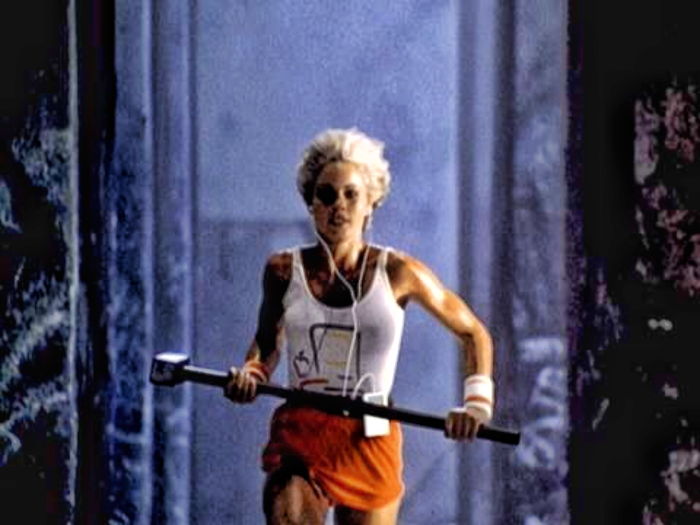

In 1984, Apple Computer Inc. launched the Macintosh personal computer with a highly anticipated commercial that aired during the Super Bowl XVIII, which was watched by millions of people.
The commercial, which was directed by Ridley Scott, was titled "1984" and featured a dystopian, Orwellian world, inspired by George Orwell's novel "1984". The commercial showed a group of identical people sitting in a large auditorium, watching a screen showing a Big Brother-like figure addressing them. A woman, representing the Macintosh computer, then ran into the room and threw a sledgehammer at the screen, shattering it and freeing the people from their conformity. The commercial was widely praised for its production values, its use of imagery, and its powerful message of individuality and freedom. It was a bold move for Apple, as the company was relatively small at the time and was taking on much larger competitors such as IBM. The "1984" commercial is widely considered one of the most iconic ads in advertising history, and it helped establish the Macintosh as a groundbreaking product that was different from anything else on the market. It also demonstrated Apple's willingness to take risks and to think outside the box, which became part of the company's brand identity.